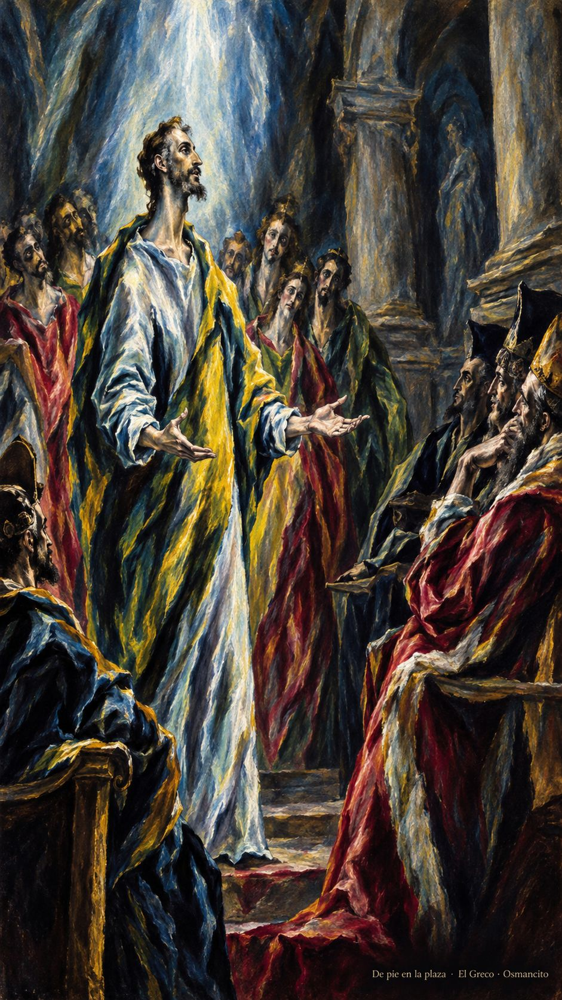
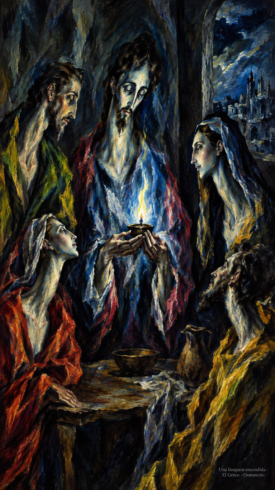
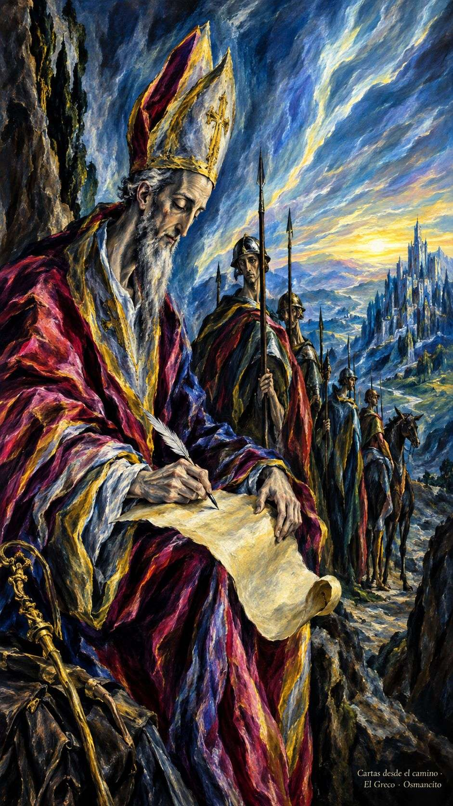

17 de octubre de 2026
¡Buenos días!
El nombre bueno
7
Yo les aseguro que a todo aquel que me reconozca abiertamente ante los hombres, lo reconocerá abiertamente el Hijo del hombre ante los ángeles de Dios
Lucas 12,8. Fuente
Que la palabra no se quede en el bolsillo cuando el mundo pregunte por lo que creemos. Que aprendamos a decir el nombre bueno sin levantar la voz, como quien enciende una lámpara y no presume del fuego. Que el miedo no elija las respuestas ni nos vista de silencio ante los que miran. Que seamos testigos sencillos: fieles en lo pequeño, firmes en la tormenta. Que el Espíritu enseñe a su hora la palabra.

- El que habla sin miedo ante los jueces recoge Lucas 12: el Espíritu enseña la palabra a su hora.

- La lámpara pequeña encarna la palabra buena: no presume del fuego, basta sostenerla.
¡Feliz sábado 17 de octubre!
😊🙋♂
San Ignacio de Antioquía, obispo y mártir
Que no nos pese el camino cuando conduce a la verdad. En la memoria de Ignacio, obispo que escribía cartas camino del martirio, aprendamos a llamar a las cosas por su nombre: al pan, pan; a la entrega, entrega. Que la fe no sea adorno sino trigo dispuesto, y que la comunidad sea cuerpo y no tumulto. Que podamos decir, con la vida entera, a quién pertenecemos.

- Ignacio escribe camino de Roma: las cartas de un obispo que se sabe trigo de Dios.
¡Feliz memoria de san Ignacio de Antioquía!